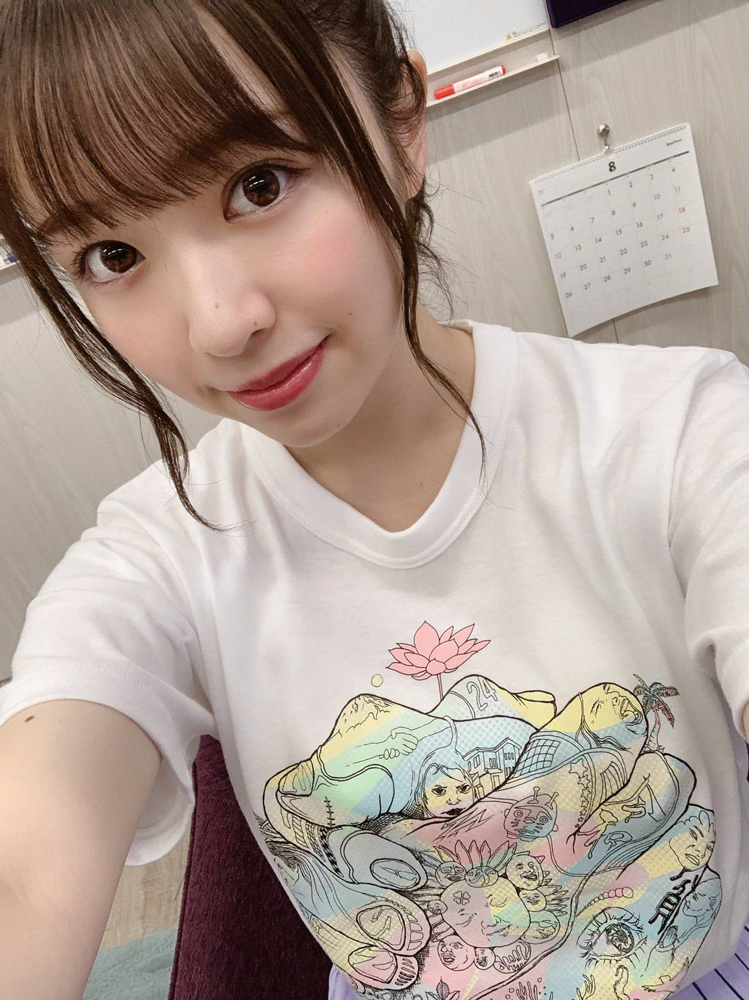
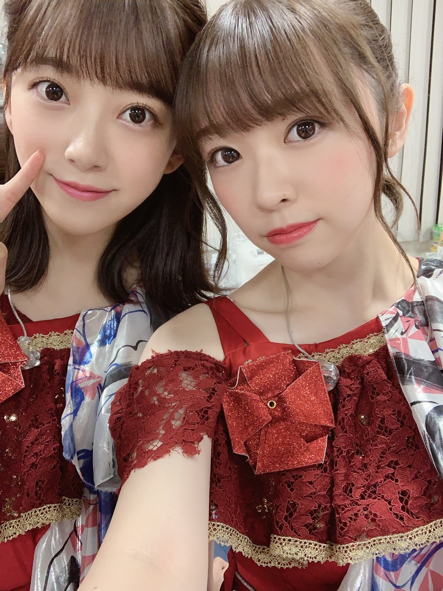
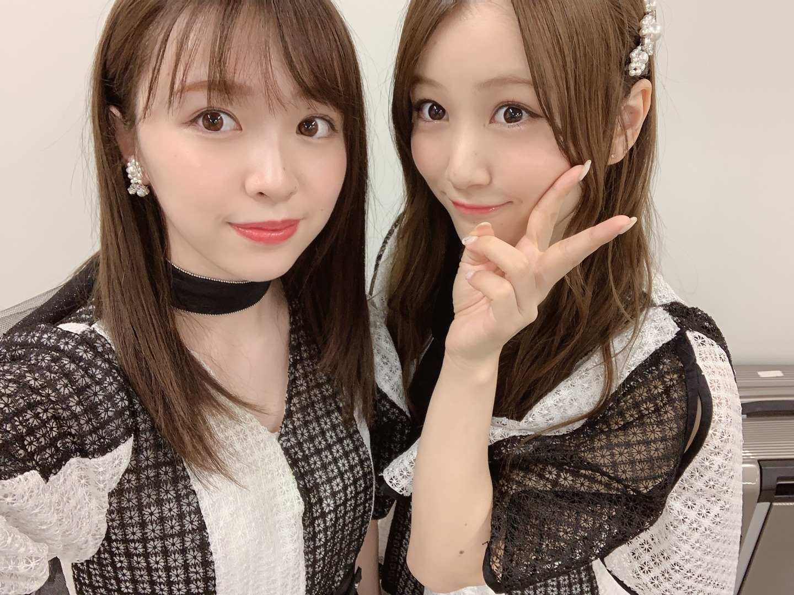
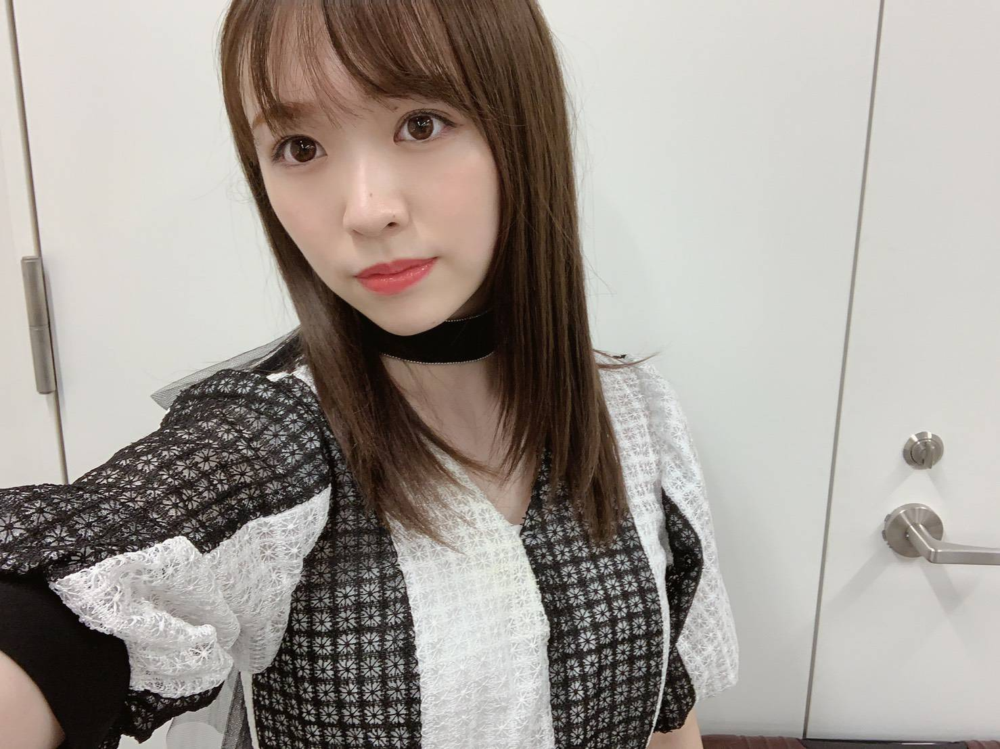

2019/0903Tue涼し

24時間TVに出演させて頂きました。
小さい頃から唯一ずっと見てきていた番組に
出させて頂いたことを光栄に思います！
Sing Out!の歌詞は乃木坂を知らない方達にも
聴いてほしいくらい
本当に素敵な楽曲だなあと思います。
そんな素敵な楽曲、選抜メンバーとして
入れていろんな歌番組に出させて頂いて
本当に幸せな期間でした！
24枚目も、宜しくお願い致します！！！
本日発売日です！ぜひお手に取って頂けると
嬉しいです！

みおぽん
真夏の全国ツアー、今年も走りきったぞ〜！
携わって頂いた全ての関係者の皆様、
ライブスタッフの皆様、
お疲れ様でした！
そして有難うございました。
ファンの皆様の声援のおかげで
私達は駆け抜けられました。
有難うございました！
真夏の全国ツアーは本当に毎年好きだな
というか私はライブが本当に好きです。笑
玲香さんが9月1日をもって卒業されました。
玲香さんとは舞台で2ヶ月くらい一緒に過ごしたり
メンバー何人かと家で鍋をつついたり
思い出は沢山あります。
卒業していくメンバーを見送るのは
悲しいし寂しいけど、
玲香さんを見送るのはまた何か別の感情でした。
乃木坂46を作り上げて引っ張ってくれて
影でずっとみんなを笑顔に支え続けてきてくれた方
本当に沢山助けられました。
8年間本当にお疲れ様でした。
また別の場所で輝いてる玲香さんを見るのが
楽しみです！

仲良しみなみちゃん♡

みり愛
2019/09/03 20:12


コメント(402)
ライブのみりあちゃんの踊りとか歌声が聞けたり見れたりして嬉しかったよ！！
アンダーライブもあるし頑張ってね！
24時間テレビ、全国ツアーお疲れ様でした！
Sing Out!の披露のときは、いつもみり愛のパフォーマンスに注目していたよ！
全国ツアーでは、2番のサビ前に楽しそうに前に出てくるみり愛が、とても可愛かった(^^)
玲香の卒業は、何か違う感情っていうのすごく分かる。
何かっていうのは表せないんだけど、やっぱキャプテンの存在っていうのは大きいんだなって思ったよ。
お仕事頑張ってください！！！
写真きれいですよ〜
神宮全3日生きました！
すごいライブでしたね〜
みり愛のダンスすごいですよ！
もっと見てほしい！
アンダーライブも必ず行きます！
24thの握手会も行きますよ〜
早くみり愛に会いたい！
やっぱりみり愛のダンス凄い好きだ
宇宙兄弟いつも仲よくて微笑ましい
アンダラ頑張って
全国ツアーお疲れ様でした！天気も心配された神宮でしたが無事3日間駆け抜けられてよかったね！
みり愛ちゃんのパフォーマンスとても良かったよ！個握でまた全ツの感想伝えたいな。
玲香さんと最後に素敵な時間を過ごすことができたかな？これまでたくさんの忘れられない思い出があると思うけど1つ1つ大切にして、今までグループを引っ張ってきてもらった姿を今度はみり愛ちゃんが後輩ちゃんたちに。素敵な先輩になってね。
24枚目もよろしくお願いします。
今回は神宮には参加出来なかったけどナゴヤドームには2日とも参加したよ！次のアンダーライブにも絶対に行くね！！！！ゆっくり休んでね！
ツアーが終わると夏が終わった感じするよね～
神宮とライブビューイング行ったけどみり愛ちゃんめっちゃ写ってて最高だった！！
2期生は最高ですね(^^)
れいかさんの卒業はショック大きいな‥‥
明るい未来が待ってると信じて送り出そうと思ってたけどやっぱり寂しいな～
これからの乃木坂にも期待しています！！
10カ月ぶりの個握行けるからめっちゃ楽しみ！！
今からわくわくしてます(* ﾟ∀ﾟ)
今年の夏もとても良い思い出が出来たよ。ありがとう。
みり愛が選抜として回ってきたツアーはとても楽しみであり、頑張ってほしいなって思ってました。無事に駆け抜けていった姿がとてもかっこよかったよ。年々、ダンスがかっこよさ、しなやかさ、素人目でしか言えないけどとにかく凄さが増してるなって思います。特に神宮での姿はもう惚れてしまうくらいかっこよかったよ。友達にもみり愛のダンスをライブで見たいって言われて嬉しくなったよ。細かい感想は握手会で話すね！
玲香が卒業してしまって少し寂しいけど、玲香の最後の言葉やソロ曲にあるように今いるメンバーなら任せられる、もっと大きなグループになれるってその気持ちはファンも一緒で新たにスタートした乃木坂にすごく期待しているし、頑張ってほしいと思います。後輩も増えてみり愛が引っ張る姿を見たい、特にダンスは後輩のメンバーにアドバイスしてあげてね。
これからの乃木坂で、みり愛がどんな活動していくのかとても楽しみに、これからも微力だけど力になれるように応援していくね。
名古屋での握手会楽しみにしてます☺
みり愛ちゃんお疲れ様です。
自分は神宮2日目にお邪魔させて貰いました。
北野日奈子さんとの失恋お掃除人は楽しくコールさせて頂きました
Singout期間ものすごく貴重な体験や経験を積んだのだと思います。
僕もみり愛推しとして楽しくさせてもらいました！
たくさん泣いて、たくさん笑って、たくさんの幸せを貰いました。
あなたを推しててよかった。僕はそう思いました。
これからも応援していきますし、推し変などしませんから！
だって1番みり愛ちゃんが好きだからね！
｢1度きりの人生楽しんだもん勝ち！｣
僕はその言葉を胸にいつも生活してます。
楽しまなきゃ損だもんね！
アンダーライブ絶対に行くからちゃんと準備しとけよ〜？笑
僕は君がどこにいても君を見ています。
立ち位置がどこであれ、選抜だとか、アンダーだとか、関係ないです。
語りすぎましたかね笑
またコメントします！
んじゃ！したっけ〜
大好き！！！！
月も変わりついに夏が終わり秋になりましたね。
9月になった途端に暑さが和らいで少しずつ涼しくなってきたようにも感じます。
ライブではれいかさんの卒業。
本当に世代が交代する時が来たのかなと思せられます。
世代は移り若い子達の時代。
その中でもみり愛は2期生という立場で、今では2期も下の子達がいるね。
なんか信じられないけれどみり愛が前に立って引っ張ってあげる時がきています。前からやっていただろうけどね。慕われている姿を見るとほっこりするし。
これからも素敵な姿で後輩も先輩も全ての方を魅了してね。
乃木坂46は次のステージになりますね！
陰ながら、ずーっと応援します
今回は映像でみり愛がたくさん抜かれていて、すごく嬉しかったよ！！
俺たちファン乃木坂のみんが大好きで癒しになってるよ！
これからも変わらず、元気に頑張ってください！
アンダーライブ絶対行きます！！
行けなかったけど
影ながら
応援してたよ！
今度 みり愛ちゃんに
会えるのは、
11月の個握です。
楽しみに待ってまーす！
全ツ完走お疲れ様〜ゆっくり休んでね！
また個握でいろんなこと話せるときを楽しみに待ってるね〜
ももんが
ライブ楽しかった！今年の夏もありがとう。
また握手会で感想話すね！
24枚目の個別握手券本日お家に届きました〜！
24枚目もたくさんみり愛と思い出作れたらいいなって思ってます！よろしくね！大好き！
神宮だけ行けなかったけど凄い良かったー
ライブお疲れ様です！
ライブお疲れ様です！！
今週の握手会楽しみにしてます！
れいかさん卒業してさみしいけど、みりあちゃん！後輩引っ張っていってね！応援してんで！今日フラゲ日だね！握手券いっぱい撮ったから会いに行くね！まっとってな〜
今日もお疲れ様。明日もみりあにとって良い一日でありますように！
筒井ちゃんがエピソードトークしてましたね。
みり愛さんが魅せ方が上手いのには秘訣があったのですね！
可愛いし、面白いし、歌もダンスも上手なので
さらに人気が増しそうです！
これからの後輩との絡みに期待してます！
軍団つくりましょう！（笑）
いつも応援してます
24時間テレビ見たよ！みんなが見てる有名な番組に出てる姿を見れて嬉しかった！
ライブお疲れ様でした。福岡以外全部行ったよ。みり愛ちゃんのパフォーマンス力、周りを惹きつける魅力が出てた！遠くからでもわかりやすかったです。
玲香の卒業悲しいよね。今までグループの先頭に立って引っ張ってくれてたから。違う現場で一緒にお仕事するのを見れるのを楽しみにしてます。
これからも体調に気をつけて頑張ってね！応援してます。
乃木坂を引っ張っていって下さい
神宮の1日目と2日目にお邪魔させていただいたんですけどめちゃめちゃ楽しかった！今度はアンダラ絶対当てるから待っててね〜！今回の個握取れなかったから次回はめちゃめちゃ行きます！
みりあちゃんお疲れ様♡
そして、全国ツアーお疲れ様でした！
ぼくは全国ツアーは行くとこはできませんでしたが、無事にやりきってくれてよかったです！
次は個別握手会でみり愛ちゃんに会いに行くので、よろしくお願いします！
これからも頑張ってください！
名古屋と神宮に行ったよーーー
みり愛ちゃんの輝いてる姿見れて本当によかったです！！
次にみり愛ちゃんと会えるのは16日の握手会！
楽しみにしてるね！！
真夏の全国ツアー参加しました！
みり愛のかっこいい姿、可愛い姿、全部見れました！
特に、日常のダンスはとても印象的で
見てて鳥肌がたちました。また見たいです！
アンダーライブの発表もあったね〜
絶対行きます！楽しみです！
これからも頑張ってね！
いつもありがとう！
大好きです！
ブログ更新ありがとうみり愛ちゃん
２４時間テレビ見たよ。
みり愛ちゃんが２４時間テレビに出てること
そこで踊ってることが感動したし
本当にうれしかったです！
神宮ライブ二日間行きました。
ずっと感動したし、みり愛ちゃんにとって
選抜として踊る神宮で、
どのシーンを見ても、かわいかったり
かっこよかったり、鳥肌が止まらなくて
最高でした。
二日目のデコだしは最高にかわいかったです。
二日間、ステージできらきら踊るみり愛ちゃんは
かっこよくて、かっこよすぎて
もっともっとみり愛ちゃんが
好きになりました。
玲香ちゃんを舞台とか、
いろんなところで一人の女の子として
輝く姿を見れたら嬉しいね。
本当にライブお疲れ様でしたっ
真夏の全国ツアーおつかれさまでした！今年の全ツは名古屋、大阪、神宮に行きました！みり愛ちゃんにとって選抜として迎えるはじめての全ツということもあり、見に行けるものは全部行きました。
この全ツを通してみり愛ちゃんという存在、みり愛ちゃんのパフォーマンスを改めて好きになることができました。日奈子ちゃんとのミュージアム企画では操り人形になってるみり愛ちゃんがとてもかわいかったです！
そしてインフルエンサー、日常、命は美しい、世界で一番孤独なLover、咄嗟をはじめとした楽曲のみり愛ちゃんのダンスがほんとに好きでみり愛ちゃんのダンスに一気に惹き込まれていました。
そして神宮も3日間おつかれさまでした。
神宮は3日間近くでみり愛ちゃんのパフォーマンスを見ることができてすごい楽しかったです！神宮前最後ののぎおびで選抜として踊る全ツも残り神宮と改めて感じた時1秒も見逃せないなと思い、ほとんどずっとみり愛ちゃんを見ていました。選抜として神宮でパフォーマンスするみり愛ちゃんはとても輝いていました。詳細についてはまた今週の名古屋個握と全握ではなすね！
ただみり愛ちゃんのSing Out!をみていてみり愛ちゃんがとっても笑顔にクラップして踊っているのをみた時みり愛ちゃんを推してきてほんとに良かったと心の底から思いました。今年の夏はいつもよりも楽しく感じたし最高の夏を過ごすことができました。
23rdの選抜発表から始まったこの23rdの活動期間もついに今週の名古屋で最後ですね。みり愛ちゃんにこの23rdの思い出をできるだけ多く伝えることが出来たらいいなと思っています。
名古屋楽しみにしてるね！
そして、キャプテン玲香ちゃんの卒業。8年間このグループ守ってくれた玲香ちゃんの卒業を見送ることが出来て良かったです。僕も寂しいというかなんというか自分の感情がわからない状況だったなぁ。それでも玲香ちゃんを見送るために多くの1期生が駆けつけてくれて、このグループはほんとにいいグループだなと改めて感じました。
ほんとにいいグループだよね。
そして最後にアンダーライブの発表。蓮加ちゃんが泣いているのをみたらなんだか東京体育館の頃のみり愛ちゃんを思い出してなんだかまたすごいことが起こるんじゃないかなと感じました。今度はみり愛ちゃんが支える番だけど蓮加ちゃんを支えてあげようね。
自分も少しでもみり愛ちゃんを支えれるようがんばります。
アンダーライブ必ずいくね！
みり愛ちゃんほんとに最高の夏をありがとう！
みり愛ちゃん大好きだよ〜！！
まずは今週の名古屋で行きます！
24時間テレビお疲れ様
毎日癒されてます♡いつもありがとう
アンダラ楽しみです！
24時間テレビ見たよ♪̊̈♪̆̈
全ツお疲れ様✧‧名古屋と大阪行ったよ❀(*´v`*)❀
24枚目シングルまだ買いに行けてないから明日買いに行ってくるよ♪̊̈♪̆̈
これからも頑張ってね！
Singoutはみりあが参加してることもあるし
楽曲も、歌詞もとてもハッピーになるのでほんとにほんとに、大好きな曲です。
たくさんの人に広まるといいなぁ！！！
全ツも1日目と3日目みました！
みりあちゃんのダンスはやはり目に引かれるものがあるよ！
ダンスうまっ！あ、みりあじゃん！！！って思うことたくさんありました！
アンダラも発表されたね！楽しみ〜絶対、チケット当てるね！
ゆっくりする時間も少ないとは思うけど
身体しっかり休めてね。
早く握手会で会いたいよ〜！
たくさん伝えたいことある！！
全ツラストまで完走お疲れ様！！
ライブを楽しむ姿たくさん見れて楽しかったよ。
24枚目もよろしく、アンダラいきたーーーい
真夏の全国ツアーお疲れさまでした！
福岡、大阪と神宮のLVに参戦しました！
みり愛ちゃんがモニターに映る機会が多くて嬉しかったな～
ダンスしてるみり愛ちゃんを見るのが本当に好きです！
来年の全ツはみり愛ちゃんプロデュースのダンスユニットを密かに期待してます(^^)
いや、マジで！
神宮三日間お疲れ様でした。
生で見れなかったけど、最終日
ライブビューイングで見ました(^_^)
れいかたんの卒業は悲しいよね(涙)
楽しく終われて良かったですな。
日常の曲、みり愛のキレキレダンス
格好良かったよ(^o^)v
これからも乃木坂を応援して行きます！
みりみおなの写真キャワワ♡
モバメも、写真整理出来て良かった、
似てる写真でも嬉しいよ！
みり愛が、大すち♡
そして全国ツアー本当にお疲れ様です！みり愛がSingOut!の選抜メンバーとして活躍する姿をライブで観ることが出来て本当に幸せだったよ！この期間休むことなく駆け抜けてくれてありがとう！テレビとか雑誌とかニュースとか色んなところで可愛くて元気な姿を見る度にこっちも元気を貰ったし頑張れたよ。改めてありがとう！おつかれさまでした！
24枚目も応援させてください！笑
これからもついていくね！笑
可愛い写真もありがとう
なんでこんなに可愛いんやろね不思議だね笑
握手もよろしくね〜
てるより
今、2期生のドキュメンタリー見てます。
ABCD全部買ったけど、2期生のを1番に見てます。
開始数分で泣きそうでした
2期生大好き！私は応援してるからね！！
コメントする